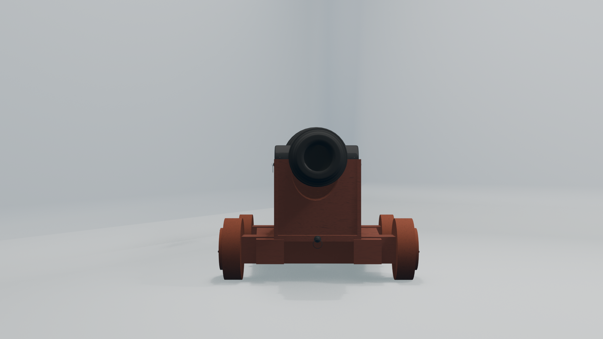
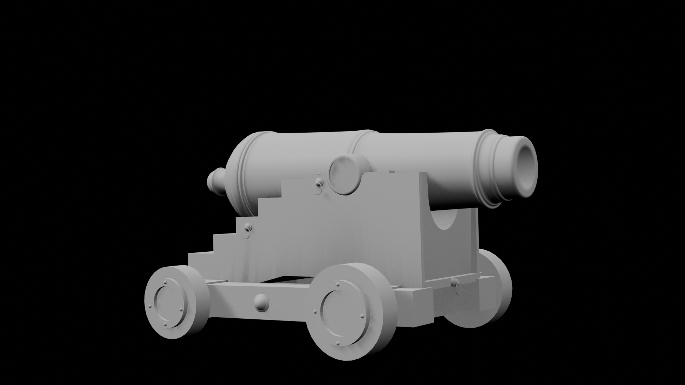
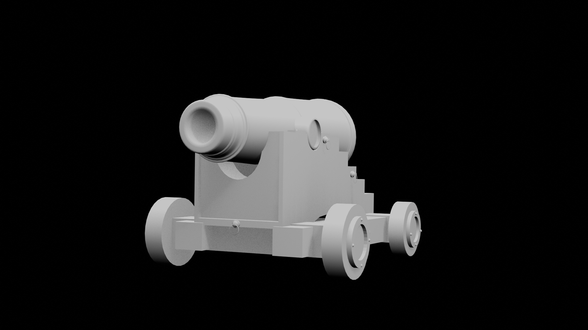

The Ideas
I created a mood board because I need to brain storm some ideas for what model I should make. These were my ideas which I thought of. I also decieded to use a range of references and different styles to pick which one I thought would be best to do for the Unit. I came up with 4 ideas which then I had to choose from.
Why I didn't choose the other models?
- Spaceship - I didn't chose to model a spaceship this is because it can prove difficult this is because you can make it as easy or hard as you like. From low poly to si-fi which can change the difficulty by a lot therefore, that would be too much to concider. With a limited deadline I thought that I should not do this.
- Car - I didn't chose to model a car this is because I would of ended up over complicating things and picking the correct car model would be hard and also choosing a style (low poly, realistic or anime). This would overwealm me therefore, I didn't pick this.
- Guns - I didn't model a gun this is because I think that a gun would be fun to model however, can be complicated depending on the style and gun itself. I also didn't want to do a gun because I thought that they look too plain if not enough detail is done and I could get side tracked. Due to wanting to add more detail to it. But, this could have been a good model to do this is because I could have used my Airsoft rifle as a first hand reference allowing me to add more detail to it.
- Ship - From low poly to high poly which can change the difficulty by a lot therefore, that would be too much to concider. However, if I break the model down I and focus on one part of trhe ship such as the cannon this could work. This is because I would be able to add detail and not get overwhelmed by modelling the entire ship.
Why I choose the cannon
I decided to do 18th century naval cannons this because I believe that this model could help me with time management and would allow me to meet the deadline. I decided to make it anime themed because I think it would be fun to try and achieve this style. However, I didn't want to do a typical anime cannon this is because they can be very si-fi and futuristic which I thought would be a bit more difficult therefore, choosing something that had a lot of secondary research and references could help me undertsand new methods of modelling. I decided I like the theme of the ship so I decided to go with the cannon which is a small segment of a bigger picture.I asked questions to help me understand my audience better. Such as wheather they are intreased in naval games if so which ones. I saw that most of my audince are under 18 with most that like the historic 18th century. 60% of people are not into naval combat with one saying they are more of a car guy. I did make a typo in the form it was suppose to say game.
pI created a second mood board this is because I wanted to get a deeper understanding of what I was modelling. This allows me to use a variety of references to help me understand what I am modelling better.
Time Management
Week 1:I managed to create a client profile which allowed me to start creating a mood board plan of ideas for which they might like. I then decided to make a form which contain research on who my audince is. After I found out they wanted a cannon I decided to create a second mood board which will allow me have a deeper idea of what I am creating. This is good as it allows references and to understand what I am making better. As well as started to write my research and plan. This was a easy week and was able to do in 1 - 2 days. I also performed my primary research to find out more on who my audince is.
Week 2:I started looking for a cannon blueprint which would allow me to see the different parts of the cannon in more detail. After researching a while I managed to find one which showed the parts and what I was aiming to model. I then inserted it into blender and managed and started modelling which you can find in the production section. As well as I finished my research and plan. But this is still a early version of it and will need to be rewritten.
Week 3: This is when I started my first attempt but it wasn't good and that I had to redo it this set me back however, the new method made it quick and easy to catch up therefore, I didn't fall behind as much as I thought I would have this means that I was on schedule for my deadline.
Week 4:This is when I started writing the reflection and rendering this is because the rendering did not take long and I knew already what I needed to work more on with the final week fast approaching I had to make a few shortcuts which then effected the quality of my model which I could have improved on.
Week 5: This is the week when I decided to make sure that I covered all the work for the assessment this therefore, this was a mostly a typing week. So not much progress was made. However, I did quickly add some new features in the models however, hard to# tell the difference. If I had more time I could have fixed some of the materials and more details.
My client profile
My client is a game designer who needs a cannon model for his upcoming 18th century naval game that will have a anime aesthetic but would like 2 coloured renders and 2 clay renders as a wat to showcase their game. I am aiming to do a mid poly build which allows me to get a good amount of detail but not at the cost of more geometry than needed. For my requirements I would need to make sure that I stay with quads and avoid n-gons this is because in game engines such as Unreal Engine and Unity they triangulate the mesh. It also helps in future proofing the model this is because people can do animations easier. This means a large variety of people will be using this model such as the game developer and their team this means I will have to bare that in mind as I will need to make sure the topology is good. The cannon will be placed upon a ship and can be animated with recoil and aiming allowing a better experience for the player. It will also be used for rendering this is because they want to include a sneak-peak towards their small indie company. This will be useful for the client as it is a important part of the game as it is a core mechanics. They will be using Unreal Engine 5 for this game and therefore, tris are not something to worry about unlike if it was Roblox Studio.
Cannon Research
This is my secondary research on 18th century cannons. The first recorded use of a cannon in Europe was to defend the city of Algeciras during the siege of 1343-44. This was the start of the cannon era as it continued to evolve cannons where separated by 3 classes This often depended on the size of the cannon ball as well as there are different weight.
- 18:
- 24
- 32
- 64
- 68

- Muzzle:The muzzle is a point of vulnerability as if there was too much pressure the cannon could peel like a banana as this is where the cannon ball is released from.
- Chase: This is the thinnest part of the cannon and was also to help to improve accuracy.
- First/Second reinforce This helped reinforce the cannon so that it reduces the chance of peeling.
- Vent This was so that there was a way to provides an external opening to ignite the propellant charge of gunpowder inside the barre
- Base ring: This was a primary attachment point for a breeching loop
- Cascable: This part was also for a attachment.
- 68
In the 18th century cannons could be made out of both iron and bronze they both had advantages and disadvantages depending on what it was used for. Iron ones are more common this is because it was lighter and less pricy however, it was more weaker to the elements and rusted easily.
Production

I added a object and in edit mode merged all vertices at the centre I then extruded along the image to match the cannon blueprint.

I added a plane and postioned it half way so I can mirror it across instead of having to do it by hand.


I have finished the cannon body these are the modifers I used
- Screw:I used this modifer because it allowed a 360 screw like shape. This gives me the cannons main body.
- Mirror (applied before screen shot)> I added a plane and postioned it half way so I can mirror it across making it a complete shape
- Subdivision this smoothens out the shape of the cannon to remove bad shading from the mesh I used 2. Each sub divison divides the mesh by 4 therefore, 2 x 4 = 8

I selected some of the faces on the front this is because there was a gap in the mesh and
instead of adding a
pole (when a point of vertices meet more than 5) I delted the faces and used the grid fill
options which quads
the mesh making sure that I don't have any n-gons or poles.


The main part of the cannon is now done let's work on the base now.

 I added a cube and scaled it down to match the reference image. I then extruded it along the
blueprint. I also
used the mirror modifier again using the marker which I had to reposition as the mirror object.
I continued to extrude
the cube so the cube would reach the end
I added a cube and scaled it down to match the reference image. I then extruded it along the
blueprint. I also
used the mirror modifier again using the marker which I had to reposition as the mirror object.
I continued to extrude
the cube so the cube would reach the end

I added a sphere and scaled it to match the blueprint. I then delted half of it and extruded it. I also used the mirror modifier again. I also duplicated it and scaled it as these was the bolts that the cannon would be attached to the base with. I also selected the end faces before extrude and extruded them along normals allowing it to have a rim around the outside of it.

I added 2 cubes and positoned them to match the blueprint.


I added a new cube and positioned it towards the back of the cannon stand. And extruded it following the shape the best I could.


I added a new cylinder and positioned it. I then incerted it then extruded along normals missing the outter faces


I added a circle and extruded and scaled it to the cannon. I also used one of the bolts and duplicated the circle


Now this is a good looking cannon. It is missing some details however, I think this is good enough as my deadline was fast approching.


This one was inspired by a little part from Mr_Forke The Basics of Anime in Blender #3.2 - Advanced Anime Wood Textures combined with the cannon material which gave me the wood effect for both wood material 1, 2 and the cannon shading. I decided to have 2 wood materials as wheel would often be a darker variant of the wood. I also did a render.
  I did my renders of both material and clay.
Reflection
I learned to make a cannon in a time effective way with good quality. Using unique methods as I did
not see people using the same method as me.
In this attempt I made it near enough as the method mentioned in my. However, I decided to make it using a cylinder for the main part of the cannon and to make the wheels more bulky. This caused the cannon to look sharp and more cubic. I also rushed this cannon which made me to take shortcuts and not care about the model as much as I should have done. On the other hand though it made me try and find alternative ways of making the cannonb instead of using a cylinder which lead me to find the screw modifier.

- Adding a better wheel shape
- Adding more details such as fuse or more bolts
- Add scene such as having cannon balls in the sceney
- Needs better shading (Though I am new to the shading graph in blender I completely understand why)
What went well
I think the fact that I did all of it independently was a massive achievement and doing it using my own method.
Even better if
I add more details to the model as it is very plane for the base of the cannon. Therefore, next time I will take my time and add details to the cannon.
References
- Adobe. (n.d.). Firefly. Available at: https://firefly.adobe.com/ [Accessed 2 Nov. 2025].
- Fandom. (n.d.). Artillery - Black Sails Wiki. Available at:https://black-sails.fandom.com/wiki/Artillery [Accessed 2 Nov. 2025].
- Fandom. (n.d.). Sailor Cannons - Sea of Thieves Wiki. Available at:https://seaofthieves.fandom.com/wiki/Sailor_Cannons [Accessed 2 Nov. 2025].
- Gibraltar National Museum (n.d.). The Development of Artillery. [online] Gibraltar National Museum. Available at: https://www.gibmuseum.gi/our-history/military-history/development-of-artillery.
- Heinz History Center. (2023). A Closer Look: An 18th Century Cannon. [online] Available at: https://www.heinzhistorycenter.org/blog/fort-pitt-museum-a-closer-look-18th-century-cannon/ [Accessed 2 Nov. 2025].
- Reddit.com. (2024). Reddit - The heart of the internet. [online] Available at: https://www.reddit.com/r/explainlikeimfive/comments/1f9hllr/eli5_why_do_older_guns_and_cannons_typically_have/ [Accessed 2 Nov. 2025].
- Reddit.com. (2019). Reddit - The heart of the internet. [online] Available at: https://www.reddit.com/r/history/comments/cj54oa/in_naval_battles_in_the_era_of_say_1700_to_1900/ [Accessed 2 Nov. 2025].
- Navy.mil. (2025). Bronze Guns (cannons) Glossary. [online] Available at: https://www.history.navy.mil/research/library/online-reading-room/title-list-alphabetically/b/bronze-guns-cannons-glossary.html [Accessed 2 Nov. 2025].
- Facebook.com. (2022). Castillo de San Marcos National Monument. [online] Available at: https://www.facebook.com/CastilloNPS/posts/both-bronze-and-iron-were-used-to-make-cannons-throughout-the-18th-and-19th-cent/879809797522321/ [Accessed 2 Nov. 2025].
- Wikimedia.org. (2022). File:RML 64 pounder 71 cwt gun diagram.jpg - Wikimedia Commons. [online] Available at: https://commons.wikimedia.org/wiki/File:RML_64_pounder_71_cwt_gun_diagram.jpg [Accessed 2 Nov. 2025].
- Mr. Forke (2024). The Basics of Anime in Blender #3.2 - Advanced Anime Wood Textures. [online] YouTube. Available at: https://www.youtube.com/watch?v=T1PgodbpLjY [Accessed 2 Nov. 2025].
- Comfee Mug (2024). Anime Metal Cel Shader in Blender 4.1 and Older [EEVEE] - Comfee Tutorial. [online] YouTube. Available at: https://www.youtube.com/watch?v=RLzxPIpB1Pc [Accessed 2 Nov. 2025].
- Chuck (2014). HM Cutter Cheerful 1806 by Chuck - FINISHED - 1:48 scale - kit prototype. [online] Model Ship WorldTM. Available at: https://modelshipworld.com/topic/8131-hm-cutter-cheerful-1806-by-chuck-finished-148-scale-kit-prototype/page/21/ [Accessed 2 Nov. 2025].